# library(ggplot2) makes its plotting functions available in this R session.
# data(mtcars) loads the built-in car dataset used in the following plotting examples.
library(ggplot2)
data(mtcars)Module 1: Visualization with ggplot2
Lesson 4 | Construct and customize plots
Introduction to ggplot2
What is ggplot2?
ggplot2 is a powerful and highly versatile plotting system for R, designed to help researchers, analysts, and data scientists create meaningful and visually appealing data visualizations. Based on the principles of the Grammar of Graphics, ggplot2 allows users to construct plots by specifying graphical primitives that represent data in a declarative way. This approach enables a clear and logical structure for creating a wide variety of charts, from simple scatter plots to complex multi-panel graphics.
At the core of ggplot2 is the idea that a plot can be broken down into components or layers. These layers include: -
Data: The actual data that you want to visualize.
Aesthetics (Aes): Mappings between the data and visual properties of the plot such as axes, colors, sizes, or shapes.
Geometries (Geoms): The geometric shapes that represent the data, such as bars in a bar chart or lines in a line chart.
Scales: Control how data values are mapped to visual properties like colors or sizes.
Coordinate systems: The space in which data is plotted, for instance, Cartesian or polar coordinates.
Faceting: Creates grids of plots by splitting the data on one or more variables.
Statistical transformations: Summarizes data in many useful ways, e.g., binning, counting, or calculating means.
Themes: Control the finer details of the display like fonts, labels, legends, and background.
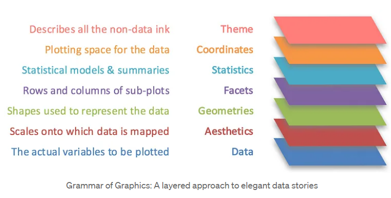
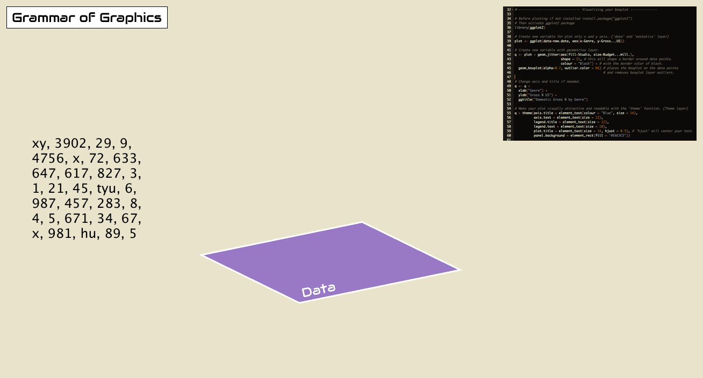
ggplot2’s layering approach makes it distinctively powerful for iterative data exploration.
You can start with a basic plot and incrementally add layers until you reach the desired level of complexity or aesthetics.
This makes it not only an effective tool for exploratory data analysis but also for creating sophisticated static and interactive graphics tailored for publications or presentations.
In the following sections, we will explore how to use ggplot2 through step-by-step instructions, building from simple examples to more complex plots, and discussing how to adjust and customize each component of a plot.
This guide will equip you with the knowledge to harness the full potential of ggplot2 in your data visualization tasks.
Step 1: Loading ggplot2 and Data
To begin working with ggplot2, you first need to load the package and prepare a dataset. For our examples, we will use the mtcars dataset which is built into R.
Step 2: Initiating a ggplot Object
Every ggplot2 graph begins with the ggplot function. It sets up a plot with data and aesthetic mappings. Aesthetics describe how variables in the data are mapped to visual properties (aesthetics) of the graph.
# ggplot() defines the data and aes() maps variables to visual properties such as x, y, and color.
# geom_point() adds paired observations when present; labs() and scale functions control labels and axes.
ggplot(data = mtcars, aes(x = wt, y = mpg))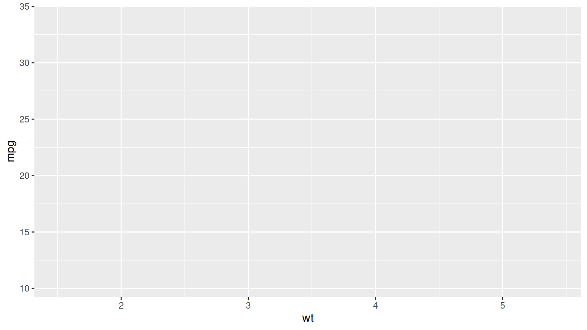
Here, data specifies the dataset to use, and aes is used to define the primary aesthetic mappings - placing car weight on the x-axis and miles per gallon on the y-axis.
Step 3: Adding Geometric Objects
Geometric objects (geoms) visually represent data. For a scatter plot, we use geom_point(), which plots a point for each observation in the dataset.
# ggplot(): starts a plot from data; additional layers are joined with +.
# aes(): maps variables to visual properties such as x, y, fill, color, or group.
# geom_point(): draws a point for each row at its mapped x and y values.
# geom_line(): joins observations in x order; group determines which observations form each line.
# factor(): stores categorical values; levels fixes their permitted order and labels can rename their display.
# geom_bar() counts raw observations within each x category by default.
# A fill mapping subdivides the counts; position="dodge" places subgroup bars side by side.
# Scatter plot with points
ggplot(mtcars, aes(x = wt, y = mpg)) +
geom_point()
# Line plot
ggplot(mtcars, aes(x = wt, y = mpg)) +
geom_line()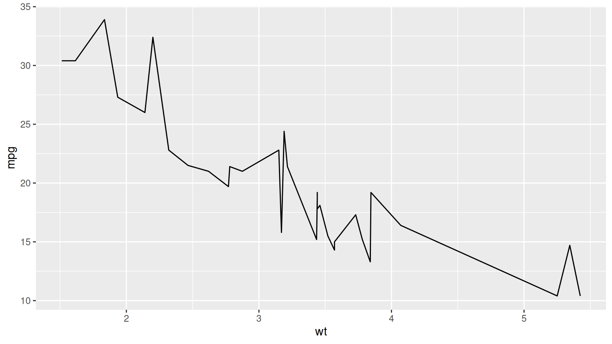
# Bar plot
ggplot(mtcars, aes(x = factor(cyl))) +
geom_bar()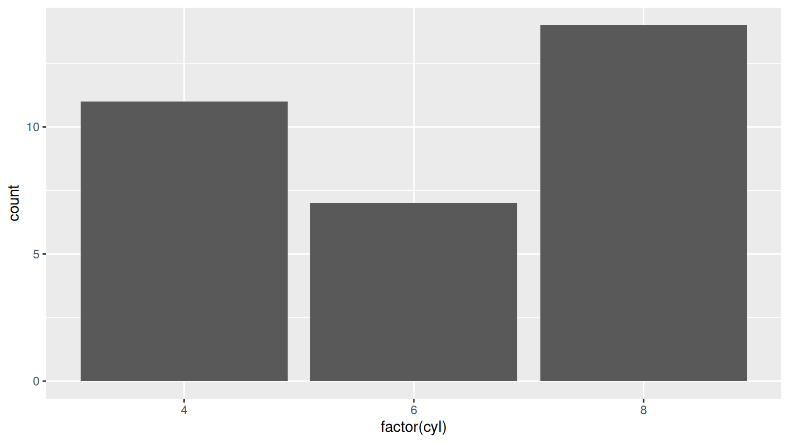
This line of code adds a layer to the ggplot object that plots points based on the aesthetic mappings we defined.
Step 4: Enhancing the Plot with Labels and Titles
Labels and titles help make your plots informative. labs() allows you to add a main title, as well as custom labels for the x and y axes.
# ggplot() defines the data and aes() maps variables to visual properties such as x, y, and color.
# geom_point() adds paired observations when present; labs() and scale functions control labels and axes.
ggplot(data = mtcars, aes(x = wt, y = mpg)) +
geom_point() +
labs(title = "Car Weight vs. Fuel Efficiency",
x = "Weight of Car (1000 lbs)",
y = "Miles per Gallon")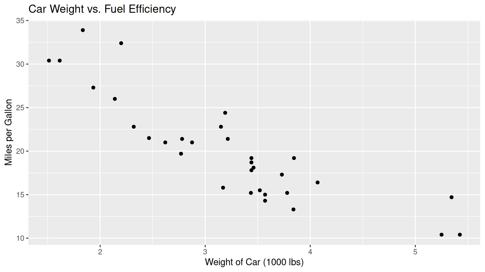
This code sets the title of the plot and labels each axis.
Step 5: Customizing Colors and Shapes
Customizing the appearance of your plot can help highlight specific data or make your plot easier to read. Use color and shape within your aesthetic mappings to differentiate groups or categories.
# factor(): stores categorical values; levels fixes their permitted order and labels can rename their display.
# ggplot() defines the data and aes() maps variables to visual properties such as x, y, and color.
# geom_point() adds paired observations when present; labs() and scale functions control labels and axes.
ggplot(data = mtcars, aes(x = wt, y = mpg, color = factor(cyl), shape = factor(cyl))) +
geom_point() +
labs(title = "Car Weight vs. Fuel Efficiency",
x = "Weight of Car (1000 lbs)",
y = "Miles per Gallon",
color = "Number of Cylinders",
shape = "Number of Cylinders")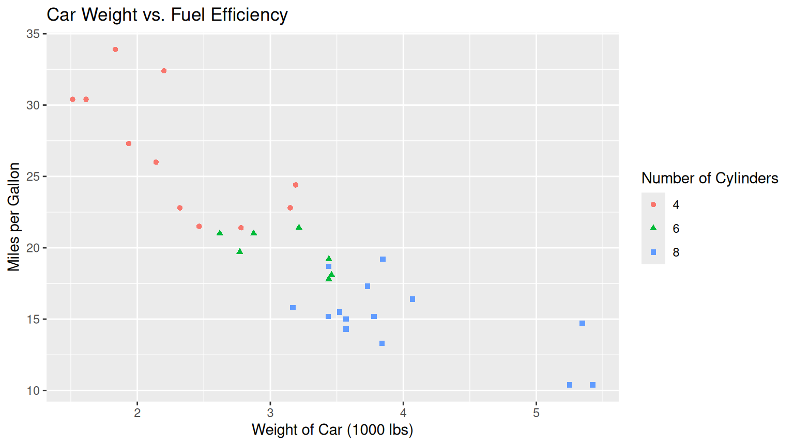
Here, cars are colored and shaped according to the number of cylinders, which helps in distinguishing between different groups visually.
Step 6: Adjusting X and Y Axis Limits
Adjusting the scales and limits of your axes can focus your analysis on specific areas of interest. xlim() and ylim() functions control the limits of the x-axis and y-axis respectively.
# factor(): stores categorical values; levels fixes their permitted order and labels can rename their display.
# xlim(): sets x-axis scale limits; ggplot scale limits can discard observations outside the range.
# ylim(): sets y-axis scale limits; ggplot scale limits can discard observations outside the range.
# ggplot() defines the data and aes() maps variables to visual properties such as x, y, and color.
# geom_point() adds paired observations when present; labs() and scale functions control labels and axes.
ggplot(data = mtcars, aes(x = wt, y = mpg, color = factor(cyl))) +
geom_point() +
xlim(2, 5) +
ylim(10, 35) +
labs(title = "Car Weight vs. Fuel Efficiency",
x = "Weight of Car (1000 lbs)",
y = "Miles per Gallon")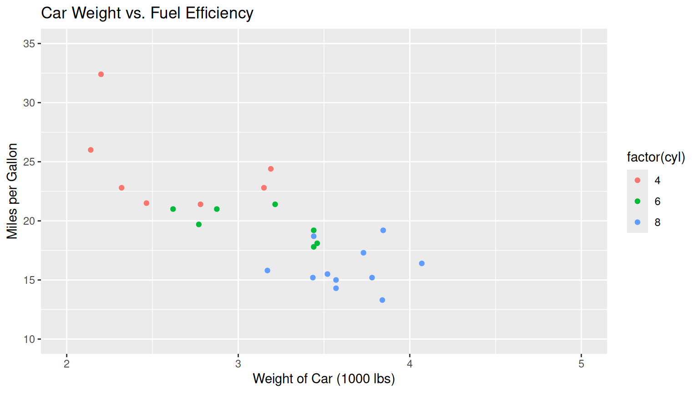
This adjustment restricts the display to cars weighing between 2,000 and 5,000 lbs and with MPG between 10 and 35.
# scale_x_continuous(): controls numeric x-axis breaks, labels, limits, and spacing.
# seq(): creates an equally spaced sequence; by sets spacing and length.out sets the number of values.
# scale_y_continuous(): controls numeric y-axis breaks, labels, limits, and spacing.
# ggplot() defines the data and aes() maps variables to visual properties such as x, y, and color.
# geom_point() adds paired observations when present; labs() and scale functions control labels and axes.
# Customizing scales
ggplot(mtcars, aes(x = wt, y = mpg)) +
geom_point() +
scale_x_continuous(name = "Weight (1000 lbs)", breaks = seq(2, 5, by = 0.5)) +
scale_y_continuous(name = "Miles per Gallon")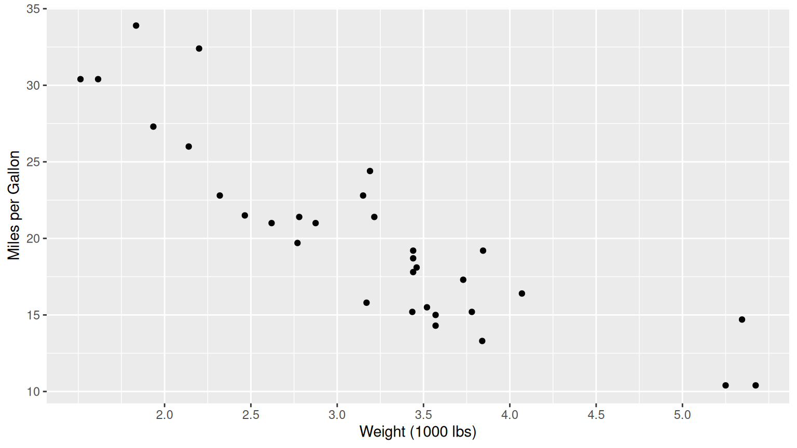
Step 7: Modifying the Legend
Legends are key to understanding the plotted data. They can be adjusted with the guides() or through direct specifications in the scale_color_* or scale_shape_* functions.
# factor(): stores categorical values; levels fixes their permitted order and labels can rename their display.
# guides(): controls legend display for mapped visual properties.
# guide_legend(): sets legend layout and appearance.
# ggplot() defines the data and aes() maps variables to visual properties such as x, y, and color.
# geom_point() adds paired observations when present; labs() and scale functions control labels and axes.
ggplot(data = mtcars, aes(x = wt, y = mpg, color = factor(cyl))) +
geom_point() +
labs(title = "Car Weight vs. Fuel Efficiency",
x = "Weight of Car (1000 lbs)",
y = "Miles per Gallon",
color = "Number of Cylinders") +
guides(color = guide_legend(title = "Cylinders"))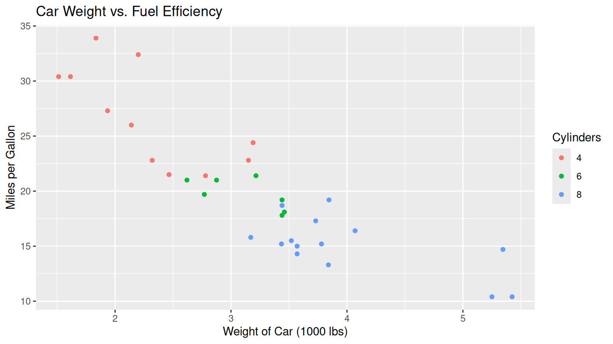
This code ensures that the legend is clearly labeled as “Cylinders”.
Step 8: Adding More Geoms
Sometimes, additional layers can help further analyze the data. Adding a smooth line can help visualize trends.
# ggplot(): starts a plot from data; additional layers are joined with +.
# aes(): maps variables to visual properties such as x, y, fill, color, or group.
# factor(): stores categorical values; levels fixes their permitted order and labels can rename their display.
# geom_point(): draws a point for each row at its mapped x and y values.
# labs(): sets axis titles, legend titles, plot titles, and captions.
# geom_smooth(method = "lm") adds a fitted linear trend to the plotted pairs.
# Its default shaded band is uncertainty about the mean trend; se=FALSE suppresses that band.
ggplot(data = mtcars, aes(x = wt, y = mpg, color = factor(cyl))) +
geom_point() +
geom_smooth(method = "lm", se = FALSE) +
labs(title = "Car Weight vs. Fuel Efficiency",
x = "Weight of Car (1000 lbs)",
y = "Miles per Gallon",
color = "Number of Cylinders")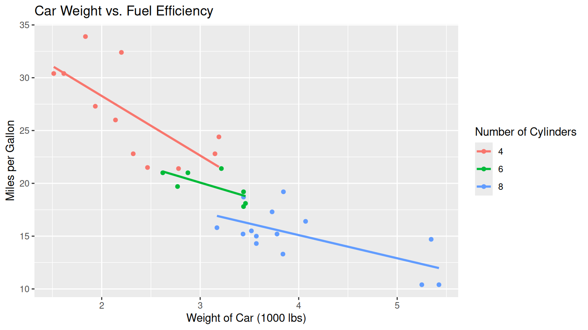
# Create one line
ggplot(data = mtcars, aes(x = wt, y = mpg)) +
geom_point(aes(color = factor(cyl))) +
geom_smooth(method = "lm", se = FALSE) +
labs(title = "Car Weight vs. Fuel Efficiency",
x = "Weight of Car (1000 lbs)",
y = "Miles per Gallon",
color = "Number of Cylinders")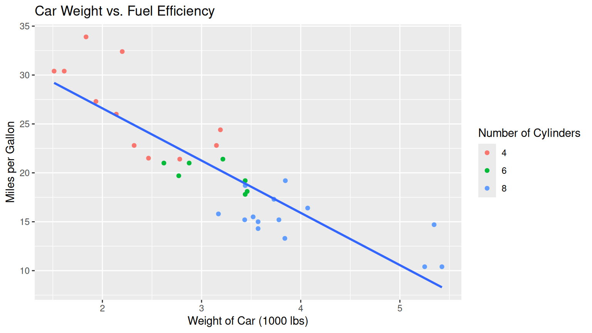
In the first code, multiple regression lines are plotted — one for each cylinder category because color = factor(cyl) is part of the global aesthetics and affects all layers, including geom_smooth().
- In the second code, only one regression line is plotted for all the data combined, with
color = factor(cyl)only applied togeom_point()and not affectinggeom_smooth().
Faceting
Faceting in ggplot2 is a feature that allows you to split one plot into multiple plots based on a factor or factors contained in the dataset. Each resulting panel (or facet) displays a subset of the data and is a standalone plot with the same axes and scales. This makes it easy to compare different subsets of the data visually.
# library(): loads a package so its functions can be used in this session.
# ggplot(): starts a plot from data; additional layers are joined with +.
# aes(): maps variables to visual properties such as x, y, fill, color, or group.
# geom_point(): draws a point for each row at its mapped x and y values.
# facet_wrap() or facet_grid() separates observations into panels using grouping variables.
# The ~ formula defines the grouping layout; compare panels with attention to their axis scales.
library(ggplot2)
# Faceting by number of cylinders
ggplot(mtcars, aes(x = wt, y = mpg)) +
geom_point() +
facet_wrap(~ cyl)
# Faceting with grid
ggplot(mtcars, aes(x = wt, y = mpg)) +
geom_point() +
facet_grid(vs ~ am)
Faceting by Number of Cylinders
# ggplot(): starts a plot from data; additional layers are joined with +.
# aes(): maps variables to visual properties such as x, y, fill, color, or group.
# geom_point(): draws a point for each row at its mapped x and y values.
# facet_wrap() or facet_grid() separates observations into panels using grouping variables.
# The ~ formula defines the grouping layout; compare panels with attention to their axis scales.
ggplot(mtcars, aes(x = wt, y = mpg)) +
geom_point() +
facet_wrap(~ cyl)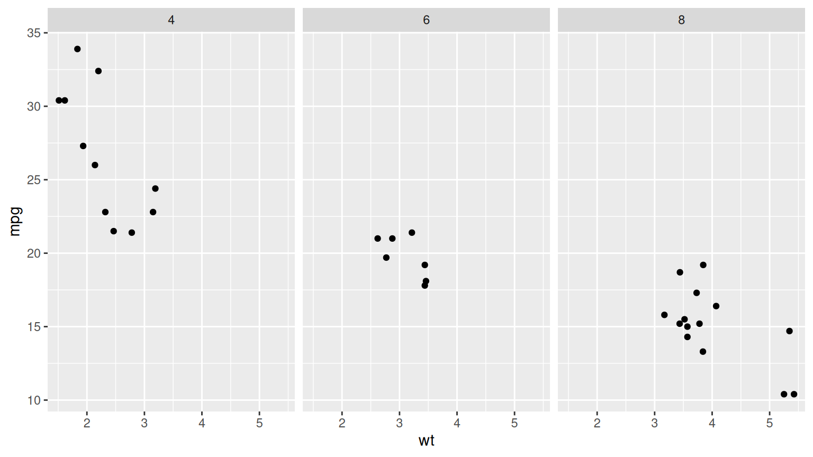
Explanation:
facet_wrap(~ cyl): This function creates a separate plot (facet) for each unique value of thecyl(cylinders) variable. The~ cylnotation indicates that faceting should be done based on thecylvariable. The resulting plot will have multiple panels, each showing the relationship betweenwtandmpgfor cars with a specific number of cylinders.
Faceting with Grid
# ggplot(): starts a plot from data; additional layers are joined with +.
# aes(): maps variables to visual properties such as x, y, fill, color, or group.
# geom_point(): draws a point for each row at its mapped x and y values.
# facet_wrap() or facet_grid() separates observations into panels using grouping variables.
# The ~ formula defines the grouping layout; compare panels with attention to their axis scales.
ggplot(mtcars, aes(x = wt, y = mpg)) +
geom_point() +
facet_grid(vs ~ am)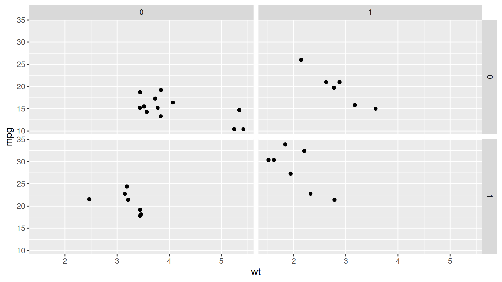
Explanation:
facet_grid(vs ~ am): This function creates a grid of plots based on the combinations of thevsandamvariables. Thevsvariable is used to create rows, and theamvariable is used to create columns.- The resulting plot will have multiple panels arranged in a grid, with each panel showing the relationship between
wtandmpgfor a specific combination ofvs(engine type) andam(transmission type).
Visual Representation:
facet_wrap(~ cyl): Ifcylhas three unique values (e.g., 4, 6, 8), this will produce three panels, each showing the scatter plot ofwtvs.mpgfor cars with 4, 6, and 8 cylinders, respectively.
|---------------------|
| cyl = 4 |
| (scatter plot) |
|---------------------|
| cyl = 6 |
| (scatter plot) |
|---------------------|
| cyl = 8 |
| (scatter plot) |
|---------------------|facet_grid(vs ~ am): Ifvshas two unique values (e.g., 0, 1) andamhas two unique values (e.g., 0, 1), this will produce a 2x2 grid of panels, each showing the scatter plot ofwtvs.mpgfor the combinations ofvsandam.
|---------------------|---------------------|
| vs = 0, am = 0 | vs = 0, am = 1 |
| (scatter plot) | (scatter plot) |
|---------------------|---------------------|
| vs = 1, am = 0 | vs = 1, am = 1 |
| (scatter plot) | (scatter plot) |
|---------------------|---------------------|In summary, faceting allows you to split your data into multiple sub-plots based on the values of one or more variables, making it easier to compare subsets of your data visually.
Demonstrating Different GEOM Types
Below are code examples using different geometric objects (geoms) in ggplot2, utilizing commonly available datasets in R like mtcars, mpg, and iris. Each example demonstrates how to use these geoms effectively:
1. geom_point() - Scatter plot
Data Types: Numerical on both axes.
Uses: Primarily used for showing relations between data items. Scatter plots are excellent for visualizing how two continuous variables relate to each other, identifying correlations, trends, clusters, or potential outliers.
Business Examples: Scatter plots are fundamental for examining the relationship or correlation between two continuous variables. They are frequently used in business to analyze trends, such as sales performance against advertising spend, or customer age versus product preference.
Code Example: The point plot shown below uses the mtcars dataset to create a scatter plot of car weight (wt) against miles per gallon (mpg). Each point represents a car, with its position determined by these two variables. The plot can be used to analyze the relationship between a car’s weight and its fuel efficiency. Generally, one might expect to see a trend where heavier cars achieve lower fuel efficiency.
# library(): loads a package so its functions can be used in this session.
# ggplot() defines the data and aes() maps variables to visual properties such as x, y, and color.
# geom_point() adds paired observations when present; labs() and scale functions control labels and axes.
library(ggplot2)
ggplot(mtcars, aes(x = wt, y = mpg)) +
geom_point()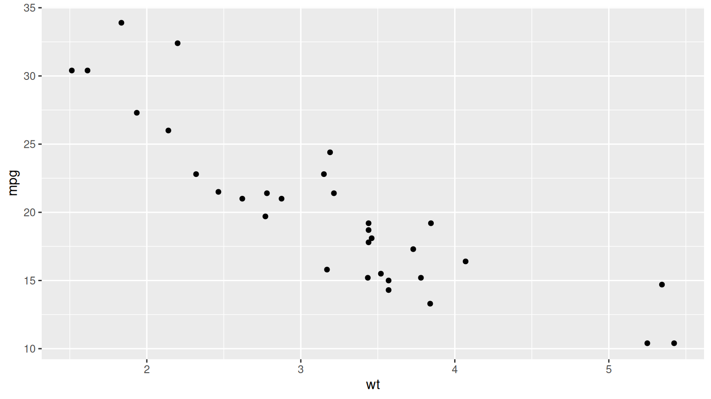
2. geom_line() - Line plot
Data Types: Typically, a continuous or ordered categorical variable on the x-axis and a numerical variable on the y-axis.
Uses: Best used for showing trends and relationships over time. Line plots are ideal for tracking changes, making them suitable for time-series data analysis but less so for direct comparisons or distributions
Business Examples: Line plots are ideal for tracking changes over time, such as revenue growth, stock prices, or website traffic trends. This makes them invaluable for time series analysis in financial reporting and market analysis.
Code Example: The line plot presented below is also based on the mtcars dataset, displaying a continuous line connecting points plotted by car weight (wt) against miles per gallon (mpg). The addition of points helps to highlight the actual data positions. This plot is useful for observing the trend of how fuel efficiency changes as car weight increases, suggesting a potential negative correlation.
# ggplot(): starts a plot from data; additional layers are joined with +.
# aes(): maps variables to visual properties such as x, y, fill, color, or group.
# geom_point(): draws a point for each row at its mapped x and y values.
# geom_line() joins observations in x order within each plot group.
# Connecting values implies an ordered progression, so check whether that meaning fits the question.
ggplot(mtcars, aes(x = wt, y = mpg)) +
geom_line() + geom_point() # Adding points for clarity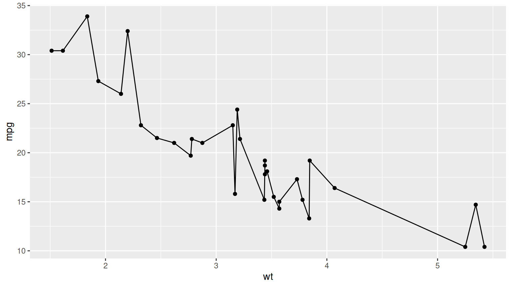
3. geom_smooth() - Smoothed line plot
Data Types: Numerical on both axes.
Uses: Focused on showing relationships with a smoothed perspective, often used to highlight underlying trends in data. While it helps in visualizing the general direction and strength of relationships, it’s not typically used for showing distributions or detailed comparisons.
Business Examples: Used to visualize trends in data by adding a smoothed line, which can help identify underlying patterns in volatile datasets. Common uses include smoothing out random fluctuations in financial data or sales data to better understand long-term trends.
Code Example: Here, a smoothed line plot is created using a linear model (lm) to approximate the relationship between wt (weight of the cars) and mpg (miles per gallon). This plot helps in visualizing a clear trend or pattern, smoothing out any outliers or anomalies, which can be particularly useful for presentations or reports where a simplified visual explanation is required.
# ggplot(): starts a plot from data; additional layers are joined with +.
# aes(): maps variables to visual properties such as x, y, fill, color, or group.
# geom_smooth(method = "lm") adds a fitted linear trend to the plotted pairs.
# Its default shaded band is uncertainty about the mean trend; se=FALSE suppresses that band.
ggplot(mtcars, aes(x = wt, y = mpg)) +
geom_smooth(method = "lm") # Linear model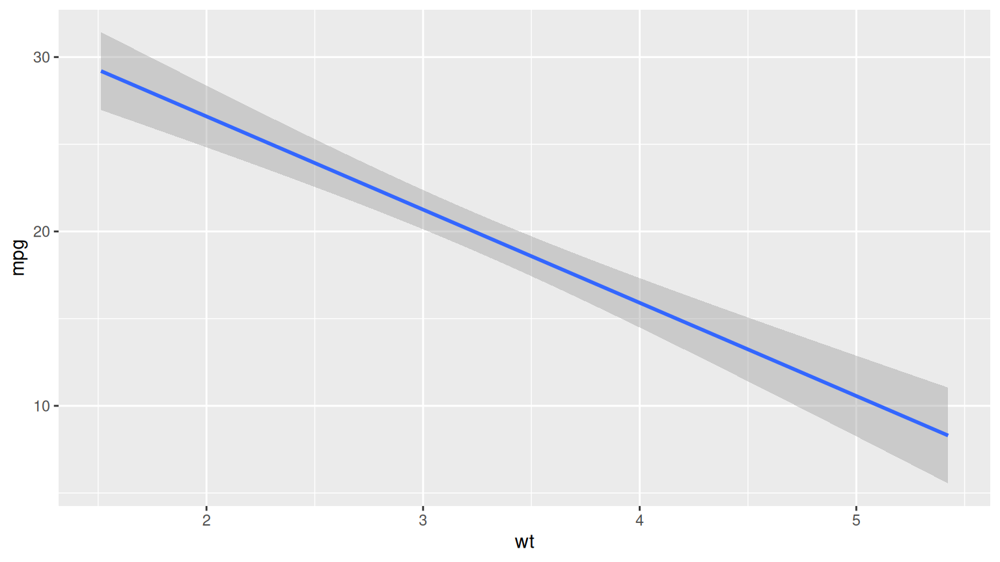
4. geom_bar() - Bar chart
Data Types: Categorical on the x-axis and numerical on the y-axis (counts or computed summaries).
Uses: Excellent for making comparisons and showing components. Bar charts are used to compare the size of different categories using the height of bars, making it clear how individual categories stack up against each other.
Business Examples: Bar charts are one of the most common tools for business reporting, useful for comparing quantities across different categories, such as sales by product category, customer counts by region, or performance metrics across departments.
Code Example: This bar chart presented below uses the mpg dataset to display the count of cars in each vehicle class. Each bar represents a different class, and its height indicates the number of cars in that class. This type of visualization is excellent for comparing categorical data, showing which vehicle classes are more or less common.
# ggplot(): starts a plot from data; additional layers are joined with +.
# aes(): maps variables to visual properties such as x, y, fill, color, or group.
# geom_bar() counts raw observations within each x category by default.
# A fill mapping subdivides the counts; position="dodge" places subgroup bars side by side.
ggplot(mpg, aes(x = class)) +
geom_bar()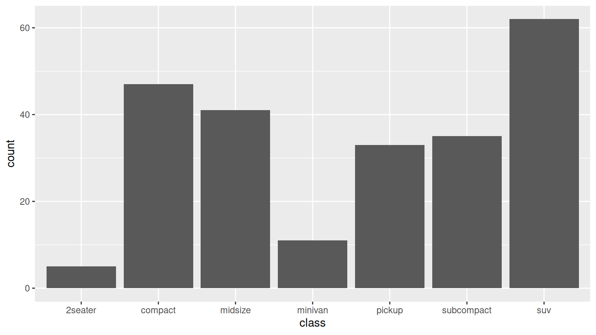
5. geom_histogram() - Histogram
Data Types: Numerical data divided into bins on the x-axis.
Uses: Specifically designed for showing distributions of data. Histograms provide a visual interpretation of numerical data by indicating the number of data points that fall within a range of values, known as bins.
Business Examples: Histograms are used to examine the distribution of a dataset, helping to understand the central tendency, variability, and shape of data distribution. In business, this could be used for analyzing the distribution of transaction sizes, customer age groups, or service response times.
Code Example: The histogram example below plots the distribution of miles per gallon (mpg) across the cars in the mtcars dataset. By dividing the mpg values into bins (in this case, 10 bins), it shows how many cars fall into each range of fuel efficiency. This is useful for understanding the overall distribution of fuel efficiency across the dataset.
# ggplot(): starts a plot from data; additional layers are joined with +.
# aes(): maps variables to visual properties such as x, y, fill, color, or group.
# geom_histogram() groups raw numerical observations into intervals and counts each interval.
# bins requests an approximate number of intervals; binwidth or explicit breaks gives direct width control.
ggplot(mtcars, aes(x = mpg)) +
geom_histogram(bins = 10) # Specify number of bins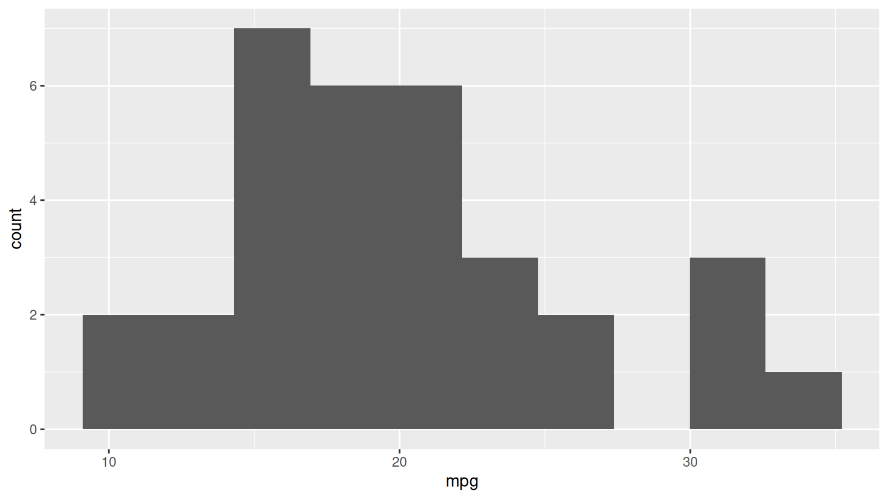
6. geom_boxplot() - Boxplot
Data Types: Categorical on the x-axis and numerical on the y-axis.
Uses: Highly effective for both showing distributions and making comparisons. Boxplots summarize the distribution of data through quartiles, while also highlighting outliers. They allow comparisons across different categories or groups.
Business Examples: Boxplots provide a concise summary of the distribution of numerical data and are particularly good at highlighting outliers. Businesses use them for comparing distributions across groups, such as comparing employee satisfaction scores across branches or sales distributions across regions.
Code Example: This boxplot example provides a visual summary of highway miles per gallon (hwy) across different vehicle classes in the mpg dataset. Boxplots show the median, quartiles, and outliers, giving a clear statistical summary of the distribution within each category. This plot is particularly valuable for identifying differences and spread in highway efficiency across vehicle types.
# ggplot(): starts a plot from data; additional layers are joined with +.
# aes(): maps variables to visual properties such as x, y, fill, color, or group.
# geom_boxplot() summarizes each numerical distribution with a box, median, whiskers, and flagged points.
# This plot uses ggplot2 quartile defaults unless explicit statistics are supplied.
ggplot(mpg, aes(x = class, y = hwy)) +
geom_boxplot()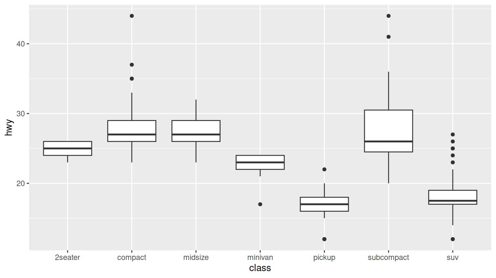
Boxplots are usually used for making comparisons between different categories.
# library(): loads a package so its functions can be used in this session.
# ggplot(): starts a plot from data; additional layers are joined with +.
# aes(): maps variables to visual properties such as x, y, fill, color, or group.
# factor(): stores categorical values; levels fixes their permitted order and labels can rename their display.
# geom_boxplot(): draws quartiles, whiskers, and flagged points; a flagged value is not automatically an error.
# labs(): sets axis titles, legend titles, plot titles, and captions.
# theme_bw(): applies a white-background ggplot theme.
# facet_wrap() or facet_grid() separates observations into panels using grouping variables.
# The ~ formula defines the grouping layout; compare panels with attention to their axis scales.
library(ggplot2)
ggplot(data = mtcars, aes(x = factor(cyl), y = mpg)) +
geom_boxplot() +
labs(title = "Box Plot of MPG by Cylinder Count", x = "Cylinders", y = "Miles per Gallon") +
theme_bw()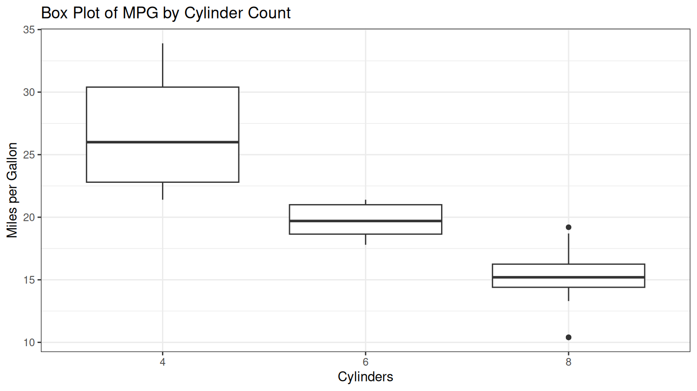
ggplot(data = mtcars, aes( y = mpg)) +
geom_boxplot() +
facet_wrap(~cyl) +
labs(title = "Box Plot of MPG by Cylinder Count", x = "Cylinders", y = "Miles per Gallon") +
theme_bw()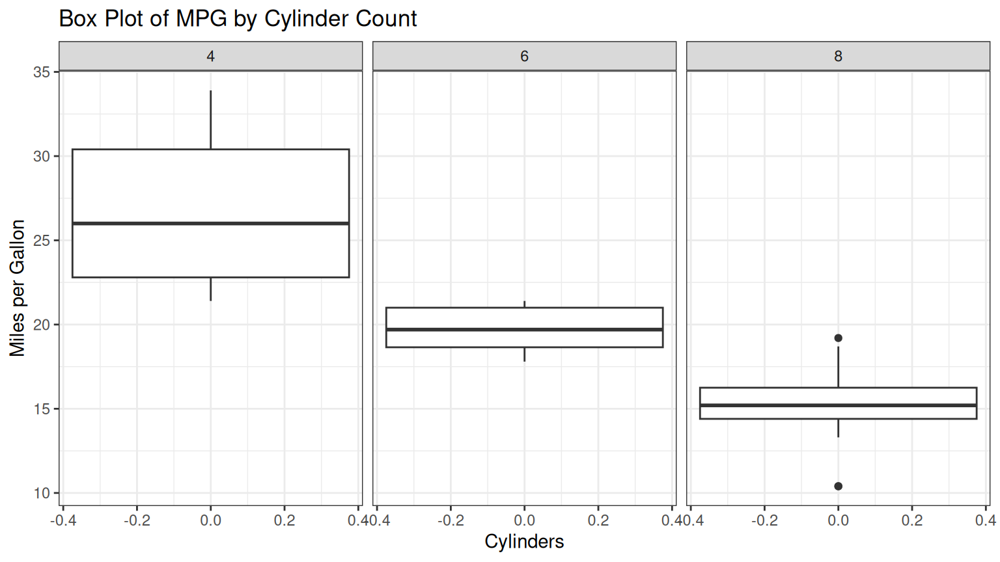
7. geom_area() - Area plot
Data Types: Continuous or ordered categorical on the x-axis, numerical on the y-axis.
Uses: Mainly used for showing components of data, especially how they accumulate over time. Area plots are great for visualizing stacked or cumulative data that contribute to a whole, showing how each part contributes to total values.
Business Examples: Area plots are useful for visualizing cumulative totals over time, providing insights into growth trends, and the contribution of different components, such as cumulative sales over time segmented by product type.
Code Example: The area plot show below visualizes unemployment data (unemploy) from the economics dataset over time (date). The area under the line is filled, emphasizing the volume of unemployment over time. This plot is effective for showing trends in data, such as increases or decreases in unemployment rates, and can be particularly impactful for economic reporting.
# ggplot(): starts a plot from data; additional layers are joined with +.
# aes(): maps variables to visual properties such as x, y, fill, color, or group.
# geom_area() fills the area beneath the supplied numerical values along x.
# Here the x-axis is time; the height represents the recorded value rather than a frequency count.
ggplot(economics, aes(x = date, y = unemploy)) +
geom_area()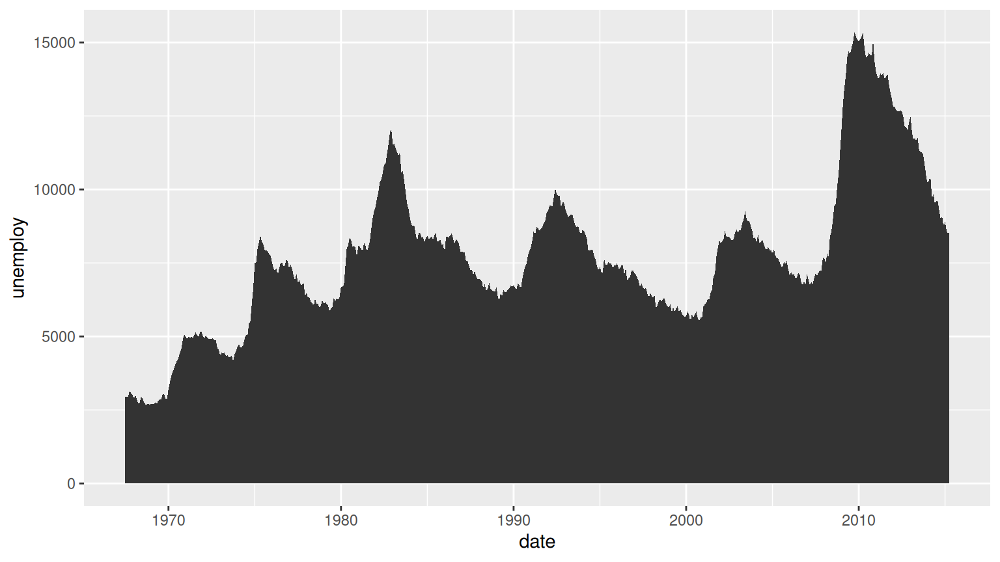
8. geom_density() - Density plot
Data Types: Numerical data on the x-axis.
Uses: Ideal for showing distributions of data. Density plots smooth out the frequency of data for a continuous variable, providing a continuous curve that represents the distribution.
Business Examples: Density plots are useful for visualizing the distribution of data where the smoothness of the curve can provide insights into the data’s characteristics, such as market analysis for product pricing or understanding income distribution within consumer segments.
Code Example: The density plot is used here to show the distribution of highway miles per gallon (hwy) in the mpg dataset. Unlike a histogram, the density plot provides a smooth curve that is useful for identifying where the data concentrates, indicating the most common fuel efficiency values observed on the highway.
# ggplot(): starts a plot from data; additional layers are joined with +.
# aes(): maps variables to visual properties such as x, y, fill, color, or group.
# geom_density() estimates a smooth numerical distribution from the observations.
# The vertical axis is density rather than a raw count; the smoothing choice affects the shape.
ggplot(mpg, aes(x = hwy)) +
geom_density()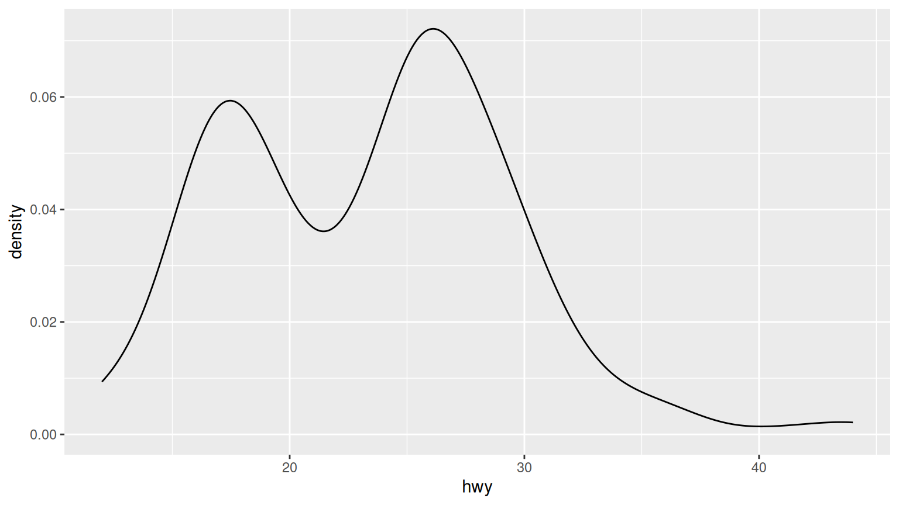
9. geom_violin() - Violin plot
Data Types: Categorical on the x-axis and numerical on the y-axis.
Uses: Suitable for showing distributions and making comparisons. Violin plots are effective at showing the distribution of data within categories and comparing these across different categories.
Business Examples: Violin plots provide rich density estimates visualized similarly to boxplots, and are particularly useful for comparing distributions between groups. They are often used in comparing customer satisfaction scores or product ratings across different categories.
Code Example: This violin plot compares the distribution of highway miles per gallon (hwy) across different vehicle classes (class). Violin plots combine boxplot and density plot features, showing both the summary statistics and the density estimates. This helps in comparing how fuel efficiency varies among classes, highlighting differences in distribution shapes and widths.
# ggplot(): starts a plot from data; additional layers are joined with +.
# aes(): maps variables to visual properties such as x, y, fill, color, or group.
# geom_violin() shows a smoothed distribution for each category, mirrored around its center.
# Its shape depends on smoothing and sample size; it does not display every observation individually.
ggplot(mpg, aes(x = class, y = hwy)) +
geom_violin()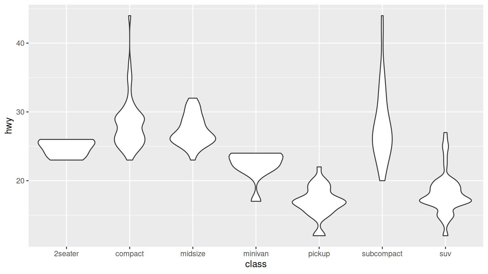
10. geom_col() - Column chart
Data Types: Categorical on the x-axis, numerical on the y-axis.
Uses: Best used for making comparisons. Similar to bar charts, column charts display categorical data with the length of each column representing the value, allowing for easy comparison across different categories.
Business Examples: Column charts are used almost identically to bar charts but are particularly effective for emphasizing variation among items. They are commonly used for displaying data such as monthly revenue, sales by category, or inventory levels.
Code Example: The column chart here represents average highway miles per gallon (hwy) for different vehicle classes (class) in the mpg dataset. Each column’s height is proportional to the average hwy value, allowing for direct comparison across categories. This plot is useful for straightforward visual comparisons and is often used in business contexts to compare averages across different groups or categories.
# ggplot(): starts a plot from data; additional layers are joined with +.
# aes(): maps variables to visual properties such as x, y, fill, color, or group.
# geom_col() draws the supplied hwy heights and stacks records sharing a class.
# This totals the recorded hwy values within a class; calculate group means first if comparing average fuel economy.
ggplot(mpg, aes(x = class, y = hwy)) +
geom_col()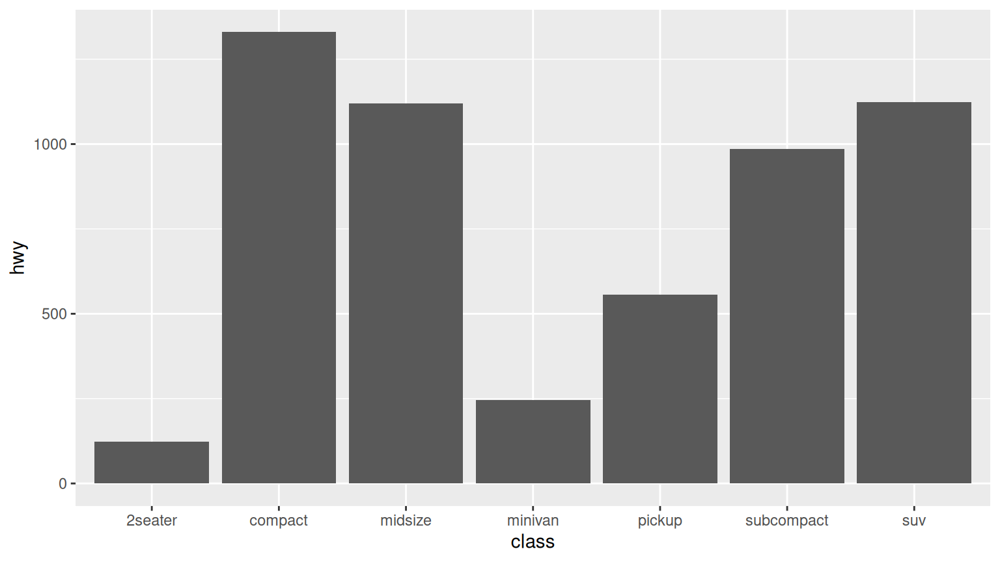
11. geom_tile() - Heatmap
Data Types: Categorical or discrete numerical variables on both axes, with a third variable represented by color.
Business Examples: Heatmaps are great for cross-tabulating variables and visualizing the intensity of data, like website traffic by day and hour, sales performance by region and product, or correlation matrices in finance.
Code Example: This heatmap uses an example data frame created with 10 rows and 10 columns labeled by letters and numbers, respectively. The value for each tile varies randomly between 0 and 100. In this visualization, each tile’s color intensity represents its associated value, providing a quick visual summary of how values are distributed across two dimensions. Heatmaps like this are commonly used in business analytics to display data density across different categories or times, making it easy to spot patterns, concentrations, and outliers.
# expand.grid(): constructs every combination of its input values as rows of a data frame.
# runif(): generates artificial uniform draws; min and max set the bounds.
# ggplot(): starts a plot from data; additional layers are joined with +.
# geom_tile() draws one colored tile for each x-y combination supplied in the table.
# aes(fill=value) encodes the numerical value by color; these generated values are artificial.
# Create some example data
data <- expand.grid(Var1 = letters[1:10], Var2 = 1:10)
data$value <- runif(100, min = 0, max = 100)
ggplot(data, aes(x = Var1, y = Var2, fill = value)) +
geom_tile()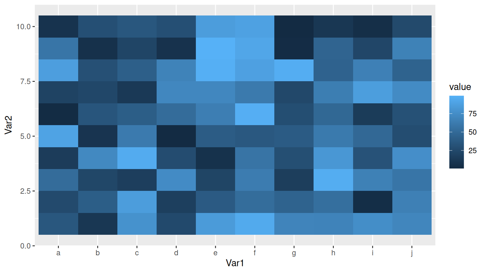
12. geom_text() and geom_label() - Adding text/labels
Data Types: Numerical or categorical data on both axes.
Uses: These are auxiliary geoms used to enhance clarity and provide additional information in plots, rather than for showing distributions, comparisons, or components on their own.
Business Examples: Adding text or labels to plots enhances clarity, particularly in dashboards and presentations where specific data points need to be highlighted or annotated, such as labeling outliers, significant points, or totals directly on charts.
Code Example: Both of these plots use the mtcars dataset, mapping car weight to miles per gallon, and label each point with the car model. geom_text() adds labels directly to the plot without any background, which can help in identifying specific points clearly. geom_label(), however, adds a background to each label, enhancing readability especially in crowded plots. These methods are useful in presentations or detailed reports where clarity in data point identification is crucial.
# ggplot(): starts a plot from data; additional layers are joined with +.
# rownames(): reads or replaces the row labels of a matrix or data frame.
# geom_text() or geom_label() places text at coordinates defined through aes().
# The label mapping supplies the text; nudges or justification control its placement.
# Use geom_text for adding text
ggplot(mtcars, aes(x = wt, y = mpg, label = rownames(mtcars))) +
geom_text(vjust = -0.5)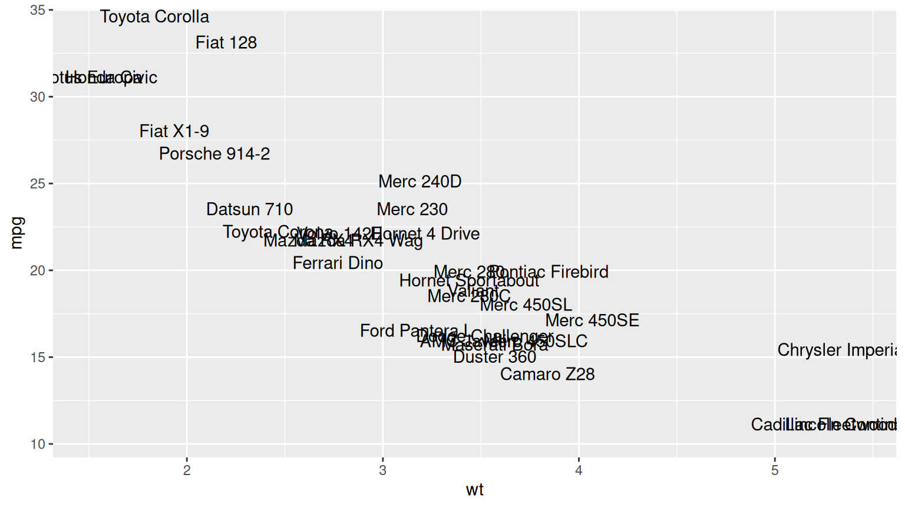
# Use geom_label for labels with background
ggplot(mtcars, aes(x = wt, y = mpg, label = rownames(mtcars))) +
geom_label(vjust = -0.5)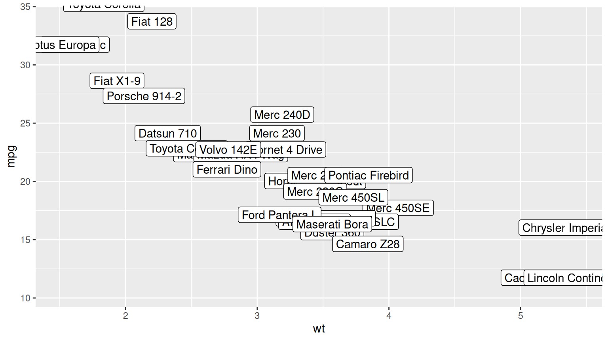
13. geom_ribbon() - Ribbon plot
Data Types: Continuous or ordered categorical on the x-axis, with a range for the y-axis.
Uses: Used for showing relationships and components, particularly useful in time series to show confidence intervals or prediction ranges around a central measure, thus providing a sense of variability or uncertainty.
Business Examples: Ribbons are often used to indicate uncertainty or variability around a central measure, ideal for financial forecasts, economic data predictions, or displaying confidence intervals in scientific measurements.
Example: The ribbon plot shown below illustrates variability around a central line, created using simulated data. It shows a sinusoidal trend (the central line), with ribbons representing a confidence interval or variability range around this trend. This type of visualization is particularly useful for representing uncertainty in predictions, such as economic forecasts, stock price projections, or any other metric where expressing the confidence of predictions is valuable.
# data.frame(): builds a table whose named columns have compatible lengths.
# sin(): computes the sine of an angle measured in radians.
# rnorm(): generates artificial normal draws; n is the draw count and sd is standard deviation.
# ggplot(): starts a plot from data; additional layers are joined with +.
# aes(): maps variables to visual properties such as x, y, fill, color, or group.
# geom_line(): joins observations in x order; group determines which observations form each line.
# geom_ribbon() fills the band between the supplied ymin and ymax values along x.
# The band has the meaning assigned by its input values; a ribbon is not automatically a confidence interval.
# Simulate some data
df <- data.frame(x = 1:100)
df$y <- sin(df$x / 10) * 2 + rnorm(100, sd = 0.5)
df$ymax <- df$y + 0.5
df$ymin <- df$y - 0.5
ggplot(df, aes(x = x, ymin = ymin, ymax = ymax, y = y)) +
geom_ribbon(alpha = 0.4) +
geom_line()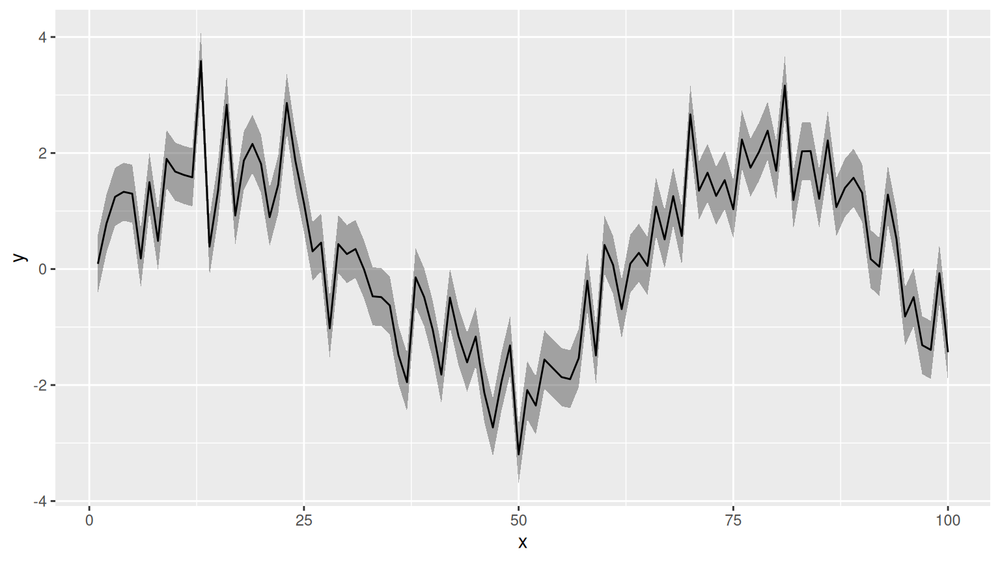
14. geom_jitter() - Jitter plot
Data Types: Categorical and numerical.
Uses: Primarily enhances scatter plots to show relationships and avoid overplotting, which helps in understanding the distribution of data points across categorical axes, thus aiding in comparisons and distributions indirectly.
Business Examples: Jitter plots help to avoid overplotting when data points overlap, useful in displaying individual transaction data over time or customer ratings where data points may stack vertically.
Code Example: The jitter plot is an adaptation of a scatter plot that adds a small, random displacement to each point. This is particularly useful when dealing with categorical data on one axis (like class in this example) to avoid overplotting where multiple points have exactly the same position. In the example show below which uses the mpg dataset, the jitter helps visualize the distribution of highway miles per gallon (hwy) for different vehicle classes, making it easier to discern individual data points within each category.
# ggplot(): starts a plot from data; additional layers are joined with +.
# aes(): maps variables to visual properties such as x, y, fill, color, or group.
# geom_jitter() offsets point positions slightly so overlapping observations become visible.
# width controls horizontal displacement; the jittered positions are display adjustments, not changed source values.
ggplot(mpg, aes(x = class, y = hwy)) +
geom_jitter(width = 0.2)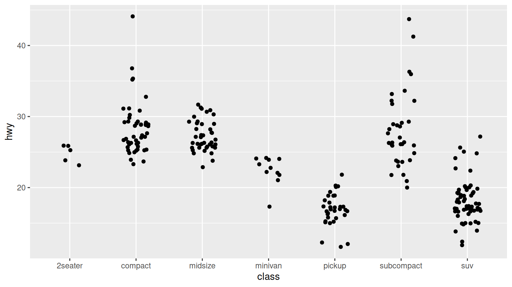
Each of these examples is tailored to show we how different types of visual representations can be achieved using ggplot2 and R’s built-in datasets. They illustrate how versatile and powerful ggplot2 can be for data visualization.
15. geom_point() - Bubble plot
Uses: Bubble plots are an extension of scatter plots, allowing we to represent three dimensions of data. Each point on the plot has coordinates (x and y), and the size of each bubble (point) represents the third dimension. This type of plot is used for showing relationships between numerical data points and can also visually represent the magnitude of the data.
Business Examples: Bubble plots are particularly useful in business for visualizing complex relationships that include sizes or volumes, which can’t be effectively captured with traditional scatter plots. For instance, a company might use a bubble plot to visualize the relationship between advertising spend and sales, with bubble size representing the number of sales transactions. This can provide insights into the efficiency of advertising spend per transaction volume. They are also used to compare and visualize financial metrics across different business units, regions, or product categories where the bubble size might represent profit margin, customer base size, or market potential.
Code Example: For this example, we’ll use the mtcars dataset that comes built into R. We’ll plot the relationship between wt (car weight) and mpg (miles per gallon) with the bubble size representing hp (horsepower).
# library(): loads a package so its functions can be used in this session.
# data(): loads a named dataset supplied by an installed package.
# ggplot(): starts a plot from data; additional layers are joined with +.
# aes(): maps variables to visual properties such as x, y, fill, color, or group.
# geom_point(): draws a point for each row at its mapped x and y values.
# scale_size_continuous(): maps numeric values to symbol sizes over the chosen range.
# c(): combines values into a vector, converting them to a common type when needed.
# labs(): sets axis titles, legend titles, plot titles, and captions.
# theme_minimal(): uses a minimal chart style; base_size controls the base text size in points.
# The size mapping encodes an additional numerical variable using point area.
# alpha controls transparency so overlapping bubbles can still be seen.
library(ggplot2)
# Load the mtcars dataset
data(mtcars)
# Create a bubble plot
ggplot(mtcars, aes(x = wt, y = mpg, size = hp)) +
geom_point(alpha = 0.5) + # Set transparency to see overlapping points
scale_size_continuous(range = c(1, 20)) + # Adjust the range of bubble sizes
labs(title = "Bubble Plot of mtcars",
x = "Weight of Car",
y = "Miles Per Gallon",
size = "Horsepower") +
theme_minimal()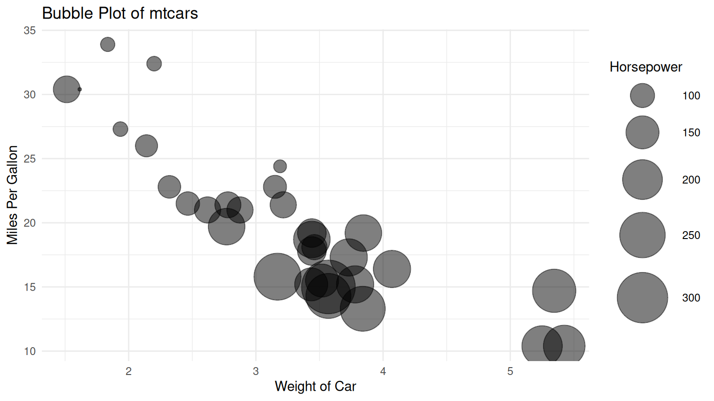
Explanation of the Code:
- aes(x = wt, y = mpg, size = hp): This sets the aesthetics for the plot, with car weight on the x-axis, miles per gallon on the y-axis, and bubble size proportional to horsepower.
- geom_point(alpha = 0.5): This creates the bubbles, with alpha = 0.5 providing some transparency so that overlapping points can be viewed more easily.
- scale_size_continuous(range = c(1, 20)): This controls the range of the bubble sizes, making it clear how they correspond to horsepower.
- labs(...): Adds labels for the axes and the legend.
- theme_minimal(): Applies a minimalistic theme for a cleaner look.
This bubble plot will visually demonstrate how weight and fuel efficiency interact and how horsepower varies within those parameters, providing a multi-dimensional analysis in a single plot, ideal for strategic planning or operational analysis in business contexts.